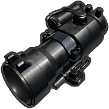
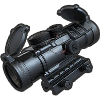
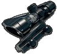
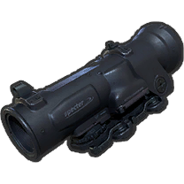
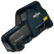
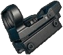

|
|
| 장탄수 | 47 |
| 발사 모드 | 연사 |
| 몸통 기본 | 51~38.25 |
| 몸통 Lv1 | 35.7~26.775 |
| 몸통 Lv2 | 30.6~22.95 |
| 몸통 Lv3 | 23~17.25 |
| 머리 기본 | 91.8~68.85 |
| 머리 Lv1 | 64.26~48.195 |
| 머리 Lv2 | 55.1~41.325 |
| 머리 Lv3 | 41.3~30.975 |
| 팔/다리 | 31~23.25 |
| 저지력 | 10000 |
| 탄속 | 715m/s |
| 연사 간격 | 0.108초 (550 RPM) |
| 재장전 시간 (전술 재장전) | 5.500초 (4.500초) |
| 영점 거리 | 100 - 1000 |
| 탄퍼짐 | 6 |
| MOA | 4.6 |
| 피해감소거리 | 51~298m |
| 등장 지역 | 에란겔 |
| 조준경 |  |  |  |  |  |  |
|---|
겨울전쟁, 제 2차 세계대전, 한국전쟁에서 사용되었던 구 소련산 데그차료프 DP-28이다. M249 이후 두 번째 경기관총으로 PC 1.0버전의 2차 테스트 서버에서부터 에란겔 전용 필드 드랍 경기관총으로 등장한다.
특유의 원반 탄창에 7.62mm 탄환 47발이 장탄되며, 장전 시간은 탄띠식이 아니라 M249만큼 오래 걸리진 않지만 AR에 비해선 조금 긴 편이다. 반동은 AKM에 비해선 부드럽지만 연사를 하면 할수록 좌우반동치가 가중되어 서너 발 이후로는 총을 제어할 수 없는 지경까지 가기 때문에 서서 쏜다면 짧게 끊어 쏘는게 필수다. M249와 마찬가지로 양각대가 달려 있어 앉거나 엎드리면 탄퍼짐과 반동이 크게 줄어든다. 부착물은 조준경밖에 달 수 없으며 장비 가능한 최대 배율은 6배율 스코프다. 연발 총기 중 가장 낮은 연사력과 부드러운 반동을 가지는 점을 종합해서 필드 드랍 경기관총 포지션에 충실하다는 평가다.
다만 배틀그라운드 특성상 배틀필드 시리즈처럼 제압이나 엄폐물 관통 시스템이 있는게 아니라서 연사력 느린 경기관총의 입지가 그렇게 크지 못하다. 건물 벽을 파괴하거나 관통할 수 있다면 든든한 화력지원조로 활약할 수 있고 총알이 스치기만 해도 화면이 흐려지고 명중률이 크게 떨어지는 제압이 가능하다면 상대 머리 위로 총알을 갈기기만 해도 상대를 엄폐물에 처박아둘 수 있다. 하지만 배틀그라운드에는 그런 시스템이 아예 없기에 M249나 DP-28은 경기관총임에도 불구하고 단순히 탄창 많은 AR 비슷하게 운용할 수밖에 없다. 그렇다면 문제가 생기는데 당장 옆에 떨어진 사람을 쏴 죽여야 하는 극초반을 제외한다면 '뭐하러 연사속도도 늦고 앉아쏘기가 강제되며 확장성도 없는 놈'을 써야 하느냐는 문제가 생긴다. 물론 M249는 보급상자 드랍답게 압도적인 전투지속력과 DPS를 자랑하지만 DP-28은 그것도 아니다. 그나마 봐줄 만한건 장탄수지만 장탄수가 많은 것도 2차대전때 이야기지 기본이 30발에 대용량 탄창을 사용하면 40발이 되는 총들이 존재하는 현대 배경의 배그 세상에선 7발 더 들어가는게 딱히 큰 장점도 아니며 연사가 느려서 7발 많은게 그리 크게 체감되지 않는다는 것도 문제다.
M249는 앉기만 하면 800RPM이라는 연사력에도 불구하고 정말 경이로운 수준으로 적은 반동 덕에 어지간한 AR이 상대라도 아예 찍어누를 수 있다. 하지만 DP-28은 앉으면 반동이 매우 작아지는건 같지만 그 작아진다는게 서서쏴 반동 기준이지 절대 작은게 아니라는게 문제다. 앉아 쏜다고 해도 3~4발 이후로는 안정적인 탄착군을 유지할 수가 없으며 총이 좌우로 마구 날아가는건 여전하다. 거기에 연사력이 그렇게 빠른게 아니라서 DPS가 좀 떨어지는게 단점. 사용탄도 무거운 7.62mm라 대량으로 소지하기도 뭣해서 4인 스쿼드에서 한 명 정도 들고 다니는 게 한계다. 아니면 통곡의 다리 검문소 운영할때 차 때려부수는 용도로나 쓰거나... 그래도 앉아쏴 반동은 스카 노파츠 수준이라도 된다. 못 써먹을 수준은 아니란 얘기.
그래도 장점이 없는 총은 아니며, 찾아보면 오히려 호평 일색의 의견도 있다. 일단은 구시대 무기임에도 조준기라도 달린다는 것. 같은 위치의 Tommy Gun이 왜 외면 받는지를 생각해보면 적절한 선택이다.
또한 양각대가 기본 부착이기 때문에 M249의 반동 보정을 그대로 받는다. AKM급 화력을 더 많은 장탄수, 더 빠른 탄속으로 퍼부을 수 있으면서 앉거나 포복할 경우 훨씬 낮은 반동으로 사격할 수 있다는 점은 절대 무시 못하는 장점이며, 실제로 많은 후기들을 종합해 본다면 최소한 앉거나 포복할 수 있는 상황이면 무반동이라는 반응이 많다. 왜 Groza가 사기인지를 생각해보자. 포텐셜로만 따지면 그로자도 별반 다를 것이 없지만 그 강하다는 AKM의 고화력을 저반동으로 쏟아 부을 수 있다는 점이 각광받는다.즉, 경기관총으로서 앉기와 포복상태에서만 반동 감소 스탯이 붙는다는 제한적인 상황이라지만 어쨌든 그런 상황만 갖추어 진다면 필드드랍 무기 주제에 고화력을 적은 반동으로 뿜어낼 수 있다는 장점이 있다. 문제는 엎드리거나 앉아서 총을 쏠만한 상황이 별로 없다는 것인데 의외로 엎드려서 싸울 수밖에 없는 게임 최후반에 풀밭에서 교전할 때 빛을 발한다.
특이하게 서있을 때 반동 보정치가 1.3배이다.대신 포복시 반동감소가 M249보다 5%더 많은 85%감소로 절대로 서서 쏘지말라고 만들어놓은 총기이다. 최소한 앉아서 사격해야지 이득을 볼 수 있는 총기이다. 따라서 건물, 창문에서 싸울 일이 많은 시가전에서는 효율이 영 좋지 않다. 상술된 총열이 긴 문제와 더불어 앉아서 사격할 수 있는 창문이 몇 없는 점을 고려해보면..
M249와 비교해서 비록 장탄수는 절반 이상으로 적고 연사력도 낮지만 7.62mm 탄약을 사용하는 고화력 총기답게 42~43발을 전탄 적중한다면 다시아는 물론이고 UAZ도 폭발한다. 때문에 말 그대로 전탄 전중시키다시피 해야 하므로 솔로에서는 무리겠지만 듀오 및 스쿼드 경기에서는 M249의 대체제로서 검문소 운용시 DP-28을 주 공격수로 세우고 나머지 아군이 신나게 쏴재끼면 터지는건 시간문제다. 연사 속도가 느린 특징 덕분에 오히려 장시간 제압사격에 활용할 수 있다. 다만 PUBG 시스템 상으로 제압 개념이 없기에 상대 플레이어가 위축되지만 않으면 역공을 받기에 딱 좋다는 문제점은 있다.
실제 2차대전과 냉전시절 공산권의 제식 경기관총으로 RPD와 함께 사용되고 1961년 RPK의 등장으로 일선에서 물러났다. 이후 예비군 총기로 사용되었으므로 마침 1960년대 구 소련 동구권이 배경인 에란겔의 콘셉트에는 적합하다고 평가받는다.또한 한 발 한 발 사격할 때마다 원반 탄창에 달린 고리가 한 칸씩 돌아가는 등 디테일이 뛰어나다.
레인보우 식스 시즈 플레이어에게는 LMG MOUNTED AND LOADED!!를 외치는 군주님의 존재 덕분에 친숙하게 느껴질 수 있는데, 공교롭게도 PUBG에서도 해당 인물이 착용한 것과 유사한 K6-3 방탄모가 착용 아이템으로 존재한다. 블루홀 측에서도 이 점을 인식하여 본 총기의 공개 삽화는 3레벨 헬멧과 나란히 나온 구도이다.
영어권 플레이어 사이에서는 역두문자어로 Dirty Penis라는 농담이 있다.
 |
|
| 장탄수 | 100 |
| 발사 모드 | 연사 |
| 몸통 기본 | 45~33.75 |
| 몸통 Lv1 | 31.5~23.625 |
| 몸통 Lv2 | 27~20.25 |
| 몸통 Lv3 | 20.3~15.225 |
| 머리 기본 | 81~60.75 |
| 머리 Lv1 | 56.7~42.525 |
| 머리 Lv2 | 48.6~36.45 |
| 머리 Lv3 | 36.5~27.375 |
| 팔/다리 | 27~20.25 |
| 저지력 | 10000 |
| 탄속 | 915m/s |
| 연사 간격 | 0.075초 (800RPM) |
| 재장전 시간 (전술 재장전) | 8.200s (7.100s) |
| 영점 거리 | 100 - 500 |
| 탄퍼짐 | 8.0 |
| MOA | 3.0 |
| 피해감소거리 | 76~400m |
| 등장 지역 | 에란겔, 미라마의 보급상자 |
| 조준경 |
|---|
보급 상자에서만 얻을 수 있는 경기관총이다. 게임상 모델은 M249E2.
많은 장탄수, 빠른 탄속과 우수한 연사력로 어지간한 돌격소총보다 뛰어난 성능을 가졌다. 물론 게임 특성상 100발 지속 연사는 힘들고 탄이 엄폐물 관통도 못 하니 무작정 퍼붓지 말고 적당히 끊어서 쏘자. 집탄률도 상당히 괜찮고 5.56mm를 사용해서 피해량이 낮을 것 같지만 연사력이 어마어마하게 빠른 덕에 의외로 Groza와 DPS가 거의 같아서 어느정도 거리가 벌어져도 앉아쏴 연사로 찍어누를 수 있다. 의외로 중거리에서도 쓸만한데, 탄속이 915m/s로 게임 내 최상위권에 속하고 조준 회복 속도도 빨라서 4배율을 달고 앉아서 한 발씩 끊어쏘면 Mini-14 부럽지 않은 속사 저격이 가능하다. 다만 단발이 안 되고 연사속도가 빨라서 클릭을 조금만 길게 하면 두 발이 나가버리는게 단점.
양각대가 기본으로 부착되어 있다. 이 양각대는 쓰레기 취급받는 Mk14의 양각대와는 궤를 달리하는 물건으로, 앉았을 때 반동 60% 감소, 엎드렸을때 반동 80% 감소라는 엄청난 보정치를 주기 때문에 무조건 앉아서 쏴야 한다.엎드리면 반동이 더 줄어들긴 하지만 엎드려서 총질할 상황이 많이 없으니 그냥 그런가보다 하고만 알고 있으면 되고, 무조건 앉아서 쏜다고 자기 세뇌를 반복하면 된다. 앉기만 하면 서서 쏠 때와는 아예 다른 총이 된다고 보면 되는데, 좌우반동과 상단반동이 모두 풀파츠+보정기 M416을 압도하는 수준으로 작아져서 거의 무반동 100발 탄창 AR로 쓸 수 있다. 또한 이 안정성과 넘치는 탄창으로 인한 엄청난 전투지속력으로 지나가는 차를 견제하다 못해 아예 터뜨려 버릴 수도 있으며, 일대 다 상황을 타개하기도 좋다. 단, 그만큼 탄 소모가 심하니 제대로 쓸 거면 여분 탄이 못해도 100발은 필요하다는게 단점.
이 무기가 빛을 발할 때는 적의 차량을 폭파시켜야 하는 상황과 제압사격이다. 특히 일명 '검문소', '통곡의 다리'라고 불리는 다리를 막는 플레이에 가장 어울리는 무기이다. 장탄수가 많고 연사력이 빠르기 때문에 엎드려서 차량에다 난사해주면 다른 어떤 총보다도 쉽게 운전수를 죽이거나 60~80발정도 갈겨서 아예 차를 폭파시킬 수 있으며, 검문소를 하는 다리 위는 시야를 가리는 풀이 없기에 엎드려서 쏘는데 부담도 없다. 그 밖에는 현실의 분대지원화기처럼 사용하는 방법이 있는데, 팀원이 기절당한 사람을 부활시키는 중이거나 특정 인물, 엄폐물, 건물을 제압할 상황일 때 적이 머리도 못 내밀도록 한참동안 제압시켜 둘 수 있다. 무시무시한 연사음과 끝없는 탄 소리를 선사해 섣불리 이동하지 못하도록 공포심을 유발하고 진입하는 아군의 발소리를 묻히게 해주는건 덤. 다만 배틀필드 시리즈처럼 제압 시스템이 있는게 아니라 적이 위치를 조금만 옮겨서 쏘면 도리어 내 머리가 깨질 수도 있으니 아무 때나 제압사격 한답시고 총알을 뿌려대면 곤란하다.
이 모든 것을 종합하면 탄속, 피해량, 연사, 반동조절이 적절한 극대용량 탄창의 총기로 실제로 손에 익은 플레이어는 이 총 하나로 돌격, 저격, 화력지원을 동시에 하는 굇수급 플레이가 가능하다.
하지만 장전속도가 무식하게 느리며 효율적으로 쓰려면 수요도 많은 5.56mm가 200발은 필요하다는 것과 기동력이 현저히 느려진다는 단점이 있다. 또한 앉거나 엎드려 쏘는게 강제되기 때문에 사각에서 탄이 날아올 때 즉각 회피가 어렵다는 점도 마이너스. 이러한 이유 때문에 시도 때도 없이 난전이 벌어지는 솔로보다는 느린 기동력을 커버해 줄 수 있고 아군의 보호를 받을 수 있는 듀오, 스쿼드에서 빛을 발하는 무기.
총기 설명이 의외로 가볍다!인데, 현실보다 게임상에서 비교적 가볍다는 소리지, 현실에선 들고 백미터 달리기를 할만한 무게는 절대로 아니다. 100발 탄통을 포함한 무게가 무려 22파운드, 10kg에 달한다.